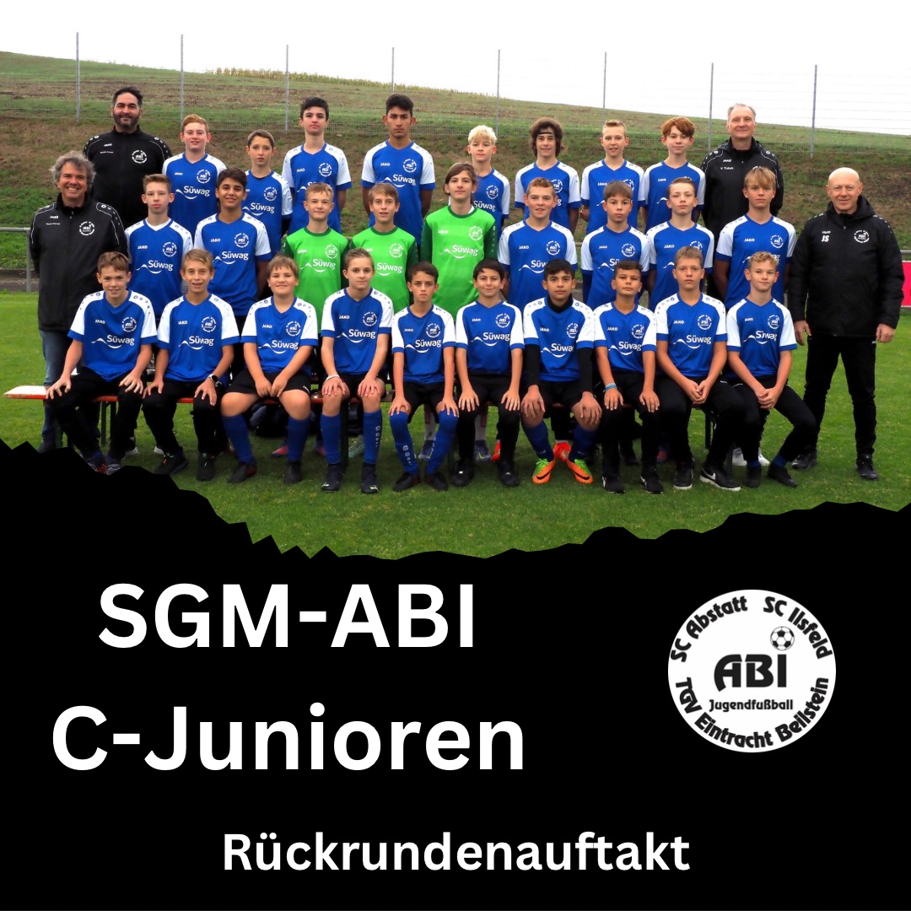

C1-Junioren
Die ABI C-Junioren feierten mit zwei Unentschieden einen gelungenen Rückrundenauftakt.
Die C1-Junioren mussten ins Hohenlohesche nach Satteldorf zum Tabellenzweiten reisen. Dieser hatte bis auf eine Begegnung alle gewonnen. Im Hinspiel verloren die ABI-Jungs mit 1:3. Bei sehr wechselhaften Bedingungen mit starkem Wind, Regen, Hagel und Sonnenschein erwischte das ABI-Team einen Auftakt nach Maß. Schon nach 6 Minuten nutzte Luigi einen Torwartfehler zum 1:0. Keine 3 Minuten später erhöhte Talik nach schöner Vorarbeit von Luigi mit einem satten Linksschuss auf 2:0. Die körperlich und altersmäßig überlegenen Gegner waren sichtbar beeindruckt. Fast hätte Alpay als Torwart das 3:0 erzielt, als ein Abschlag dank Windunterstützung immer länger wurde und schließlich an die Latte sprang und im Anschluss vom Torwart an den Pfosten gelenkt wurde. Mit dem 2:0 ging es in die Pause.
 Nach dem Wechsel machte Satteldorf deutlich mehr Druck. Doch die sehr konzentrierten und ruhig spielenden Jungs ließen kaum Chancen zu. Das 1:2 hatte sich nicht unbedingt angedeutet, doch einen schnellen Angriff konnten die Gegner nutzen. 10 Minuten vor dem Spielende fiel dann noch der Ausgleich nach einer Ecke. Leider hatte der sonst sehr gut leitende Schiedsrichter die unfaire Aktion des Gegenspielers von Robin nicht bemerkt, der mit dem Knie voraus in ihn hineinsprang.
Auch wenn das ABI-Team nach dem Spiel etwas enttäuscht war, ist ein Punkt bei dem starken Gegner ein großer Erfolg. Die Jungs spielten diszipliniert, sicher und mit hohem Tempo.
Für ABI liefen auf: Alpay (TW) – Kian – Robin – Noah B – Moritz – Luigi – Lenni – Lenny – Batuhan – Talik – Milan – Maximlian – Abdul - Jonah
Martin Kimmig